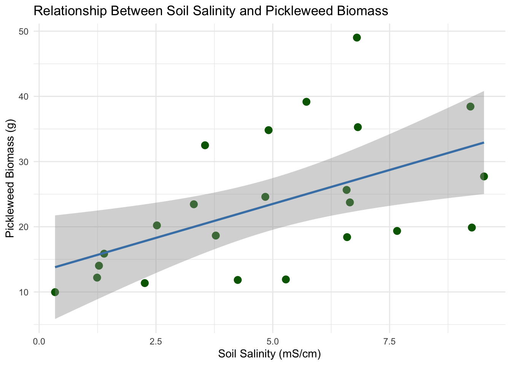
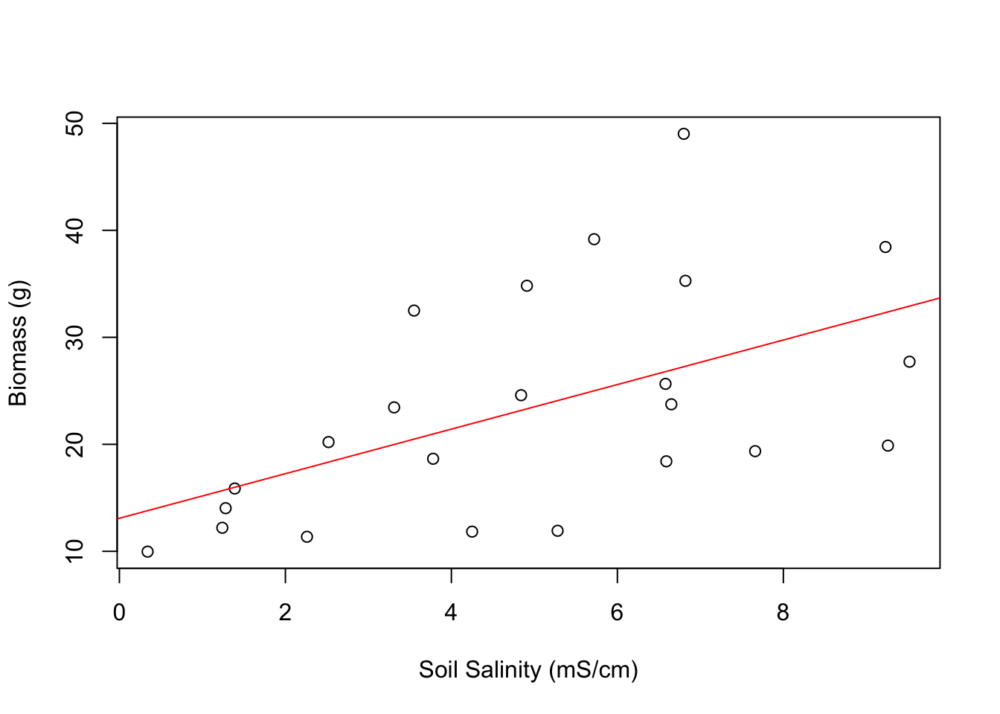
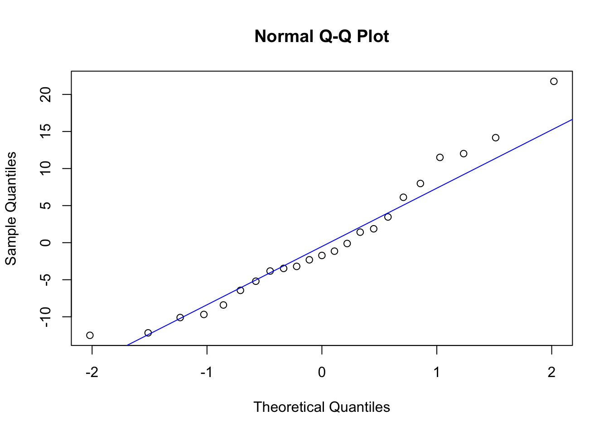
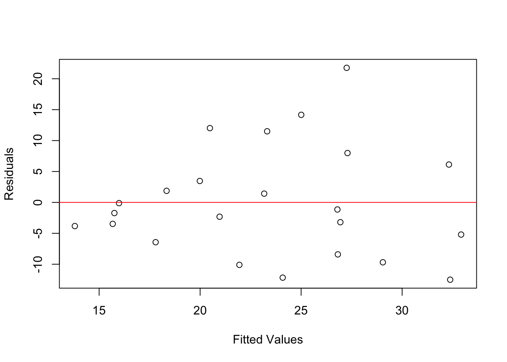
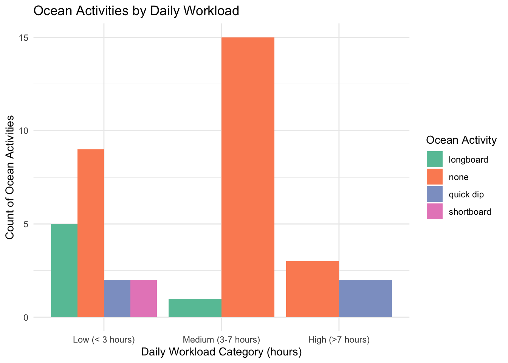
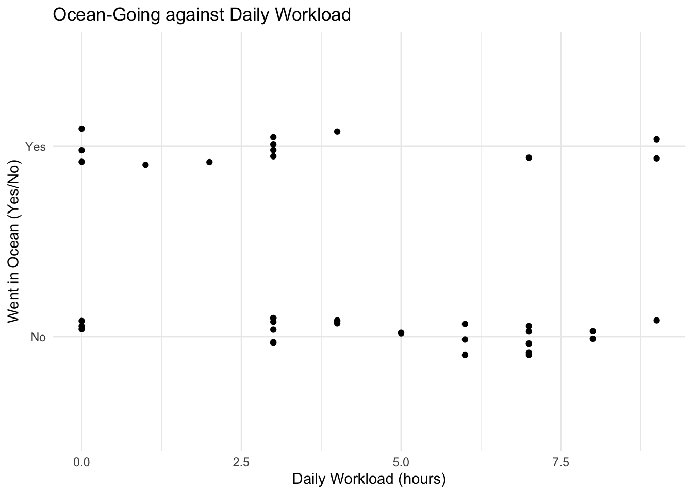
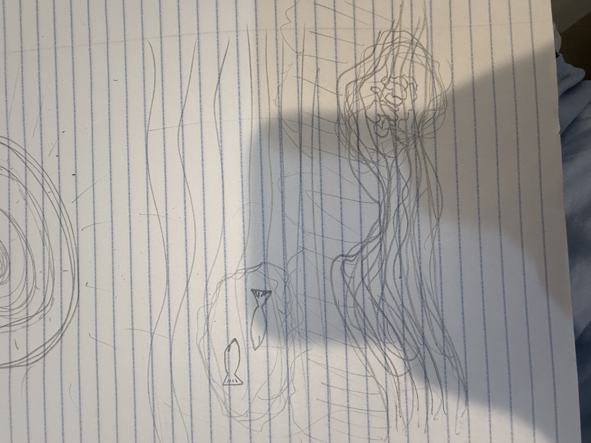
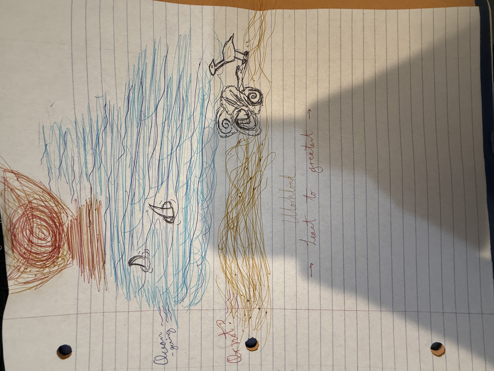
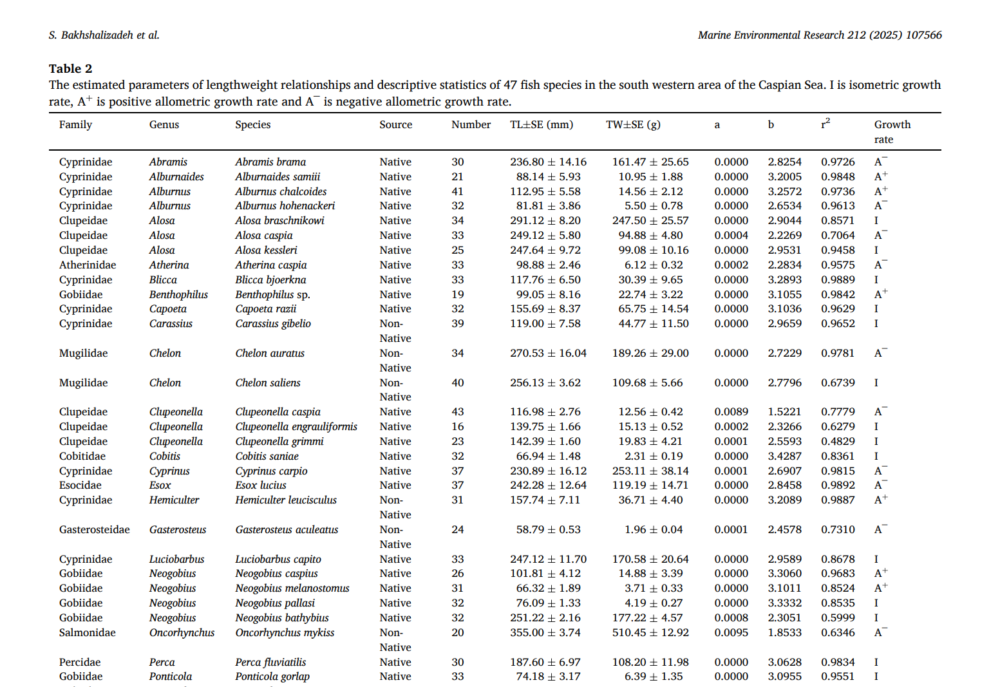

library(tidyverse)
library(here)
library(janitor)
library(readxl) # lead in packages in setup chunkHomework 3
https://github.com/mateomoribaez-design/ENVS-193DS_homework-03.git
# store salinity data
salinity <- read_csv(
here("data", "salinity-pickleweed.csv"))
# store personal data
my_data <- read_csv(
here("data", "my_data.csv"))0.1 Problem 1
0.1.1 a.
The two appropriate tests to use in this scenario are the Pearson correlation and Simple linear regression tests. The pearson correlation test measures strength of association while the simple linear regression test models the response variable as a function of the predictor variable (biomass and salinity respectively).
0.1.2 b.
ggplot(salinity,
aes(x = salinity_mS_cm,
y = pickleweed)) +
geom_point(color = "darkgreen", size = 3) +
geom_smooth(method = "lm",
se = TRUE,
color = "steelblue") +
labs(
x = "Soil Salinity (mS/cm)",
y = "Pickleweed Biomass (g)",
title = "Relationship Between Soil Salinity and Pickleweed Biomass"
) +
theme_minimal()
0.1.3 c and d
0.1.4 Checking assumptions
Linearity
plot(salinity$salinity_mS_cm, # create scatterplot of soil salinity vs pickleweed biomass
salinity$pickleweed,
xlab = "Soil Salinity (mS/cm)", # label x and y axis
ylab = "Biomass (g)")
model <- lm(pickleweed ~ salinity_mS_cm, data = salinity) # fit linear regression model predicting biomass from salinity
abline(model, col = "red") # add fitted regression line to scatterplot
I checked the linearity assumption by plotting soil salinity against pickleweed biomass with a scatterplot and a fitted linear regression line. The scatterplot shows an increasing trend with salinity, which suggests that the relationship between salinity and biomass is somewhat linear. I think the linearity assumption is satisfied.
Normality
qqnorm(residuals(model)) # create qq plot of the model residuals to visually check if they follow a normal distribution
qqline(residuals(model), col = "blue") # Add reference line to qqplot
shapiro.test(residuals(model)) # use a shapiro-wilk test for normality
Shapiro-Wilk normality test
data: residuals(model)
W = 0.95126, p-value = 0.3107I checked for normality using both a qqplot and a shapiro-wilk test. The qq plot shows that most data points fall close to the reference line, indicating that the residuals are decently normally distributed. I think that together, these results show that the normality assumption is met.
Homoscedasticity
plot(fitted(model), residuals(model), # plot fitted values against model residuals
xlab = "Fitted Values", # predicted biomass values from the model
ylab = "Residuals") # difference between observed and predicted values
abline(h = 0, col = "red") # add horizontal reference line
I checked for homoscedasticity by plotting residuals against fitted values from the regression model. The points are randomly scattered around the horizontal reference line, without a clear pattern, which suggests that the variance of residuals is constant across predicted values. I think the homoscedasticity assumption is met.
0.1.5 Run the test
Pearson correlation
cor.test(salinity$salinity_mS_cm, # use a Pearson correlation test to measure strength and direction of the relationship between salinity and biomass
salinity$pickleweed,
method = "pearson")
Pearson's product-moment correlation
data: salinity$salinity_mS_cm and salinity$pickleweed
t = 2.8979, df = 21, p-value = 0.008605
alternative hypothesis: true correlation is not equal to 0
95 percent confidence interval:
0.1568265 0.7757682
sample estimates:
cor
0.5344778 To evaluate the strength of the relationship between soil salinity and pickleweed biomass, I used a Pearson correlation test because both variables are continuous. The test output showed a moderate positive correlation between salinity and biomass (r = 0.534, t = 2.898, df = 21, p = 0.0086). The 95% confidence interval for the correlation coefficient ranged from 0.157 to 0.758. With a p-value less than 0.05, we reject the null hypothesis and conclude that there is a significant positive relationship between soil salinity and pickleweed biomass.
Linear regression (same from above)
summary(model) # display a summary of the linear regression model
Call:
lm(formula = pickleweed ~ salinity_mS_cm, data = salinity)
Residuals:
Min 1Q Median 3Q Max
-12.499 -5.819 -1.726 4.794 21.765
Coefficients:
Estimate Std. Error t value Pr(>|t|)
(Intercept) 13.0895 4.0350 3.244 0.00389 **
salinity_mS_cm 2.0832 0.7188 2.898 0.00860 **
---
Signif. codes: 0 '***' 0.001 '**' 0.01 '*' 0.05 '.' 0.1 ' ' 1
Residual standard error: 9.144 on 21 degrees of freedom
Multiple R-squared: 0.2857, Adjusted R-squared: 0.2517
F-statistic: 8.398 on 1 and 21 DF, p-value: 0.008605I use simple linear regression to model pickleweed biomass as a function of soil salinity. This test shows us how much biomass changes with increasing salinity. The regression outputs show that soil salinity significantly predicts pickleweed biomass (β = 2.083, SE = 0.719, t = 2.898, p = 0.0086). The model intercept was 13.09, showing the predicted biomass when the salinity is zero, and there was a 28.6% variation in biomass (R² = 0.286). Overall, the model was statistically significant (F(1,21) = 8.398, p = 0.0086).
0.1.6 e.
Our test outcomes suggest that soil salinity significantly affects pickleweed biomass at our restoration site. If biomass declines with increasing salinity, this means that highly saline areas could reduce plant growth. For restoration planning, this means we should plant in moderately saline zones, make soil adjustments for high salinity areas, and monitor the salinity levels in these areas before planting to ensure success.
0.1.7 f.
I might have ran both tests when I shouldn’t have but I think I’ll leave it in and just answer the second part of 1f.
Both Pearson correlation and linear regression were conducted, and they both evaluate the same null hypothesis:
H₀: There is no linear relationship between salinity and biomass
Because linear regression testing and pearson correlation are equivalent in simpe linear regression, both tests ended up leading to the same comclusion about statistical significance. From the pearson correlation test, the p-value was less than 0.05, which means that we reject the null hypothesis and conclude that there is a significant positive relationship between soil salinity and pickleweed biomass. The linear regression analysis showed that soil salinity significantly predicts pickleweed biomass, which follows what the Pearson’s correlation outputs showed. Above in the descriptions, outputs and interpretation of the tests I have my outputs specified.
0.2 Problem 2
0.2.1 a.
Categorical predictor visualization
my_data <- read_csv(here("data", "my_data.csv")) |>
clean_names() |> # load and clean my data
rename(ocean_activity = contains("ocean_activity")) |> # give my long ocean activity column a short and usable name
mutate(
daily_workload_hours = as.numeric(daily_workload_hours), # workload column is treated as a number for the math in this chunk
workload_cat = case_when( # create new column based on the hour ranges listed below
daily_workload_hours <= 3 ~ "Low (< 3 hours)",
daily_workload_hours <= 7 ~ "Medium (3-7 hours)",
daily_workload_hours > 7 ~ "High (>7 hours)"
),
workload_cat = factor(workload_cat, levels = c("Low (< 3 hours)", "Medium (3-7 hours)", "High (>7 hours)")) # convert workload_cat to a factor
)
ggplot(my_data, aes(x = workload_cat, fill = ocean_activity2)) + # create histogram visualization
geom_bar(position = "dodge") + # create side-by-side bars for each activity within the workload groups
labs( # add descriptive labels to the title and axes
title = "Ocean Activities by Daily Workload",
x = "Daily Workload Category (hours)",
y = "Count of Ocean Activities",
fill = "Ocean Activity"
) +
scale_fill_brewer(palette = "Set2") + # apply palette
theme_minimal() # change background theme
Continuous predictor visualization
my_jitter_data <- read_csv(here("data", "my_data.csv")) |> # read in data
clean_names() |> # clean column names
rename(ocean = contains("ocean_activity")) |> # Rename the long activity column to 'ocean' for the y-axis
mutate(
ocean = case_when(
ocean %in% c("none", "None", "No", "no") ~ "No", # if the value is "none", "None", or "No", label it as "No"
TRUE ~ "Yes" # anything other than no shall be yes
),
daily_workload_hours = as.numeric(daily_workload_hours)) # ensure workload column is treated as numerical values
ggplot(data = my_jitter_data, # create scatterplot visualization
aes(x = daily_workload_hours, y = ocean)) + # use the cleaned up column names
geom_jitter( # add jittered points to scatterplot
width = 0, # no horizontal jitter, we want the points to stay on their daily workload hours
height = 0.1 # jitter points slightly in the vertical direction
) +
theme_minimal() + # change theme
labs(
title = "Ocean-Going against Daily Workload", # use adequate x and y axes labels
x = "Daily Workload (hours)",
y = "Went in Ocean (Yes/No)"
)
0.2.2 b.
Figure 1: Categorical Predictor Visualization
Figure 1: Frequency of Ocean Activity Types by Daily Workload Categories. This bar chart shows how different types of ocean activity are distributed across three different workload levels: Low( < 3 hrs), Medium (3-7 hrs), and High ( > 7 hrs). The chart shows that the highest volume and variety of ocean activities occurs on low workload days, with longboarding being the most frequent activity in that category. On the other hand, as workload hours increase, ocean activity is only quick dips.
Figure 2: Continuous Predictor Visualization
Figure 2: Daily Ocean Participation Relative to Continuous Workload Hours. This scatter plot shows the relationship between the specific number of hours worked in a day and the binary outcome of whether or not an ocean activity took place.
0.3 Problem 3
0.3.1 a.
My affective visualization could show a shoreline where my academics and personal lives are vaguely summarized. The “No” dots are shown in the bottom of the chart, representing the sand, and the “yes” dots are shown above, representing an ocean line. The markings, gridlines, axes, and wording could all be symbolically replaced with things like a horizon, a sun, some birds, and maybe some fish. Adding details like rocks in the sand and sea spray on the ocean could be my way of depicting the data points in the graph without using actual data points in R.
0.3.2 b.

0.3.3 c.
My drawing isn’t very great, I might end up doing a canva illustration for my final, or use sketches to make better components like the shark fins and the bird. I also know that with better coloring tools I can color the ocean and sand in much better.

0.3.4 d.
This piece visualizes the intersection of my daily academic workload and my personal connection to the ocean, as a surfer, scuba diver, and beach enjoyer. It shows the weight that daily workload carries. It either creates a barrier to or allows for ocean activity.
My primary influence was by artists like Jill Pelto, in the way that amongst beautiful art there are intricate designs purposefully woven into the same imagery as the art. Very small details that once noticed are the only thing I could look at after that. Colors I am familiar with watching the sunset in devs, I have all the colors I could possibly need.
My work takes the form of a drawn beach-to-ocean density rug, showing the point densities in the different workload hours. This visualization comes from the use of a binary y-axis (yes or no) and a continuous x-axis (hours), which helps to create a minimalist landscape, and showing the two different worlds (on land vs in the ocean) with a santa barbara sunset in the background makes it all come together.
To create this work, I had to toy around with a few different forms of data visualization, and chose the one that best fit the kind of scenery I wanted to portray. Realizing that I wanted to show the moments of work and the moments of play made the content of my drawing much clearer. Whether there are sharks in the water or a few rocks on the beach, I know what they mean to me.
0.3.5 e.
https://docs.google.com/presentation/d/1XtyvX6DUrVWrqS2RsWbTT6DOsHsXRGo64dZoxWcBFqY/edit?usp=sharing
0.4 Problem 4
0.4.1 a.
The statistical tests that the authors used are linear regression analysis and t-test. They use these to evaluate the body weight (W) and total length (L) relationships of 47 fish species. These tests calculate regression coefficients and the coefficient of determination to check if species show isometric or allometric growth. The summary table and histogram in the article are used to display the distribution of these growth types and the biological condition of native vs invasive populations.

0.4.2 b.
The large summary table represents the data accurately but is missing immediate visual clarity, there is some time that must be invested before getting a general understanding. It includes 47 rows of regression statistics without clear visuals that explain where these values come from, or if they represent native or invasive species.
0.4.3 c.
The summary table most likely has a low data to ink ratio due to the uniform presentation of five distinct statistical columns for almost fifty species. This overwhelms the reader with visual clutter. The absence of distinctive columns don’t help highlight significant results, which ends up as a lack of visual aesthetics.
0.4.4 d.
To improve the table, I would tell the authors to group species by their respective categories (zooplanktivores vs carnivores, etc.) and use bolding to emphasize species with alarming allometric growth or higher than usual condition factors. For an alternative statistical figure, I would recommend that they use a scatter plot with regression lines to show the native vs invasive species. This would better illustrate the underlying length-weight relationship that the current figures only summarize in groups. This would make the visualization of that relationship much clearer for the reader.